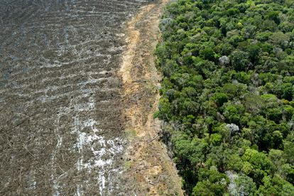

Texto de: Revista Science
Texto de: Revista Science
A floresta Amazônica representa um terço das florestas tropicais do mundo, desempenhando papel imprescindível na manutenção de serviços ecológicos, tais como, garantir a qualidade do solo, dos estoques de água doce e proteger a biodiversidade.
A taxa de desmatamento da Amazônia já variou ao longo do tempo por diversas vezes, alternando entre redução e aumento entre as taxas, mas nos últimos anos o aumento do desmatamento tem sido exponencial. Em Agosto do ano de 2019, o céu da capital de São Paulo escureceu repentinamente a partir das 15h e esse incidente ficou conhecido como o "dia escuro".
A partir de janeiro de 2023, o novo governo terá a tarefa de frear o desmatamento e reforçar o papel das instituições de monitoramento e fiscalização — como o Inpe, o Ibama e o ICMBio.
Para se ter uma aderência sobre estratégias de valorização de serviços ambientais a longo prazo é necessário compreender a dinâmica do desmatamento para poder chegar a medias eficazes no controle dos fatos. O fatalismo sobre o destino da floresta amazônica contém a tomada de ações para controlar o desmatamento. O destino da floresta amazônica depende fundamentalmente de decisões humanas, baseadas em informações confiáveis sobre os processos de desmatamento e as ações governamentais podem ter efeitos reais sobre as taxas de perda de floresta na região amazônica.